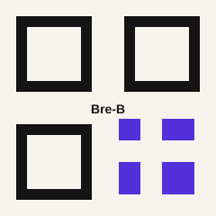
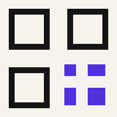

P0 · Generosidad
Generosidad
con propósito.
Tu aporte sostiene una iglesia en Cali que acompaña personas, sirve a la ciudad y anuncia la esperanza de Jesús con responsabilidad.
01 · Propósito
Una misión
compartida.
Tu generosidad sostiene las reuniones, el acompañamiento pastoral, los grupos de conexión y los espacios para niños y familias. Cada aporte se administra con responsabilidad para servir mejor.
02 · Donación en línea
Dona de forma
segura.
Estamos validando la pasarela oficial para que puedas donar con tranquilidad. Mientras se habilita, solicita el enlace seguro a nuestro equipo.
Solicitar enlace seguro ↗02 · Formas de donar
Elige cómo
participar.
Donación online
Usa el canal digital seguro para hacer un aporte puntual o recurrente.
Solicitar enlace seguro ↗Transferencia bancaria
Datos para transferir. Confirma el comprobante con el equipo de la iglesia.
Banco por confirmar · Cuenta por confirmarPuntos físicos
Puedes entregar tu aporte durante las celebraciones de domingo en Calle 13 # 75-109, Quintas de Don Simón, Cali.
Ver horarios y ubicación ↗04 · QR y llave
Rápido y
directo.
Escanea el QR oficial o usa la llave de donación desde tu aplicación bancaria. Estos recursos son placeholders hasta recibir los códigos aprobados.
Llave por confirmar

03 · Transparencia
Confianza y
responsabilidad.
Estamos preparando el espacio para publicar la información institucional, los certificados y los soportes de cada canal de donación.
- Datos de la entidad y canales oficiales
- Certificados de donación
- Preguntas sobre comprobantes
Información institucional
04 · Sección legal
Información
para tu respaldo.
Aquí se publicarán el certificado de donación, la identificación tributaria, los términos de uso y el canal para solicitar comprobantes.
Solicitar un certificado ↗04 · Ayuda y legal
¿Necesitas
ayuda?
Tratamos tus datos con responsabilidad. Para solicitar un certificado de donación o resolver una duda, escríbenos por WhatsApp.
Solicitar certificado por WhatsApp ↗